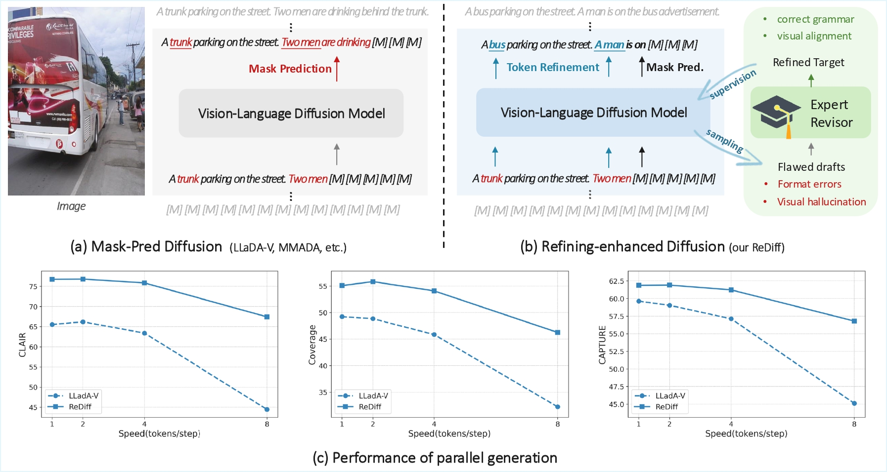
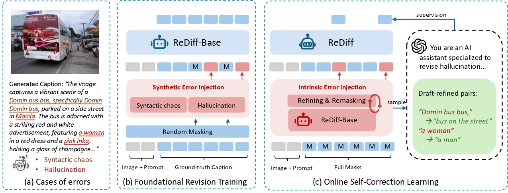
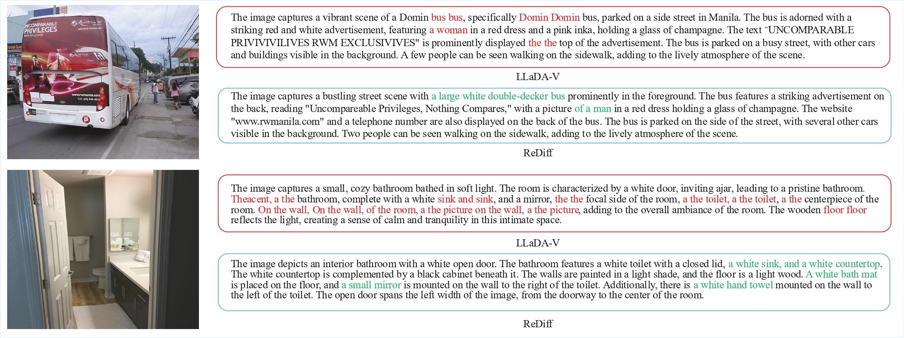
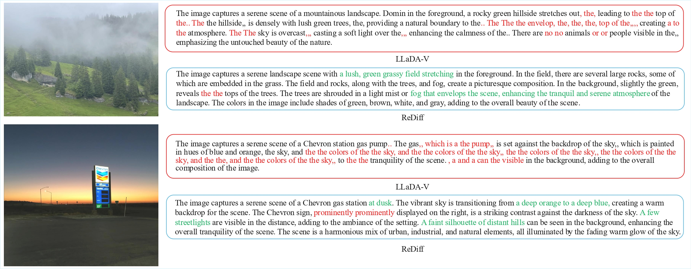
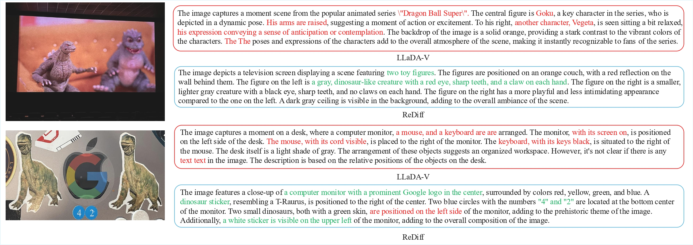
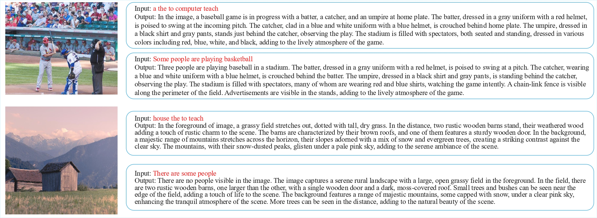
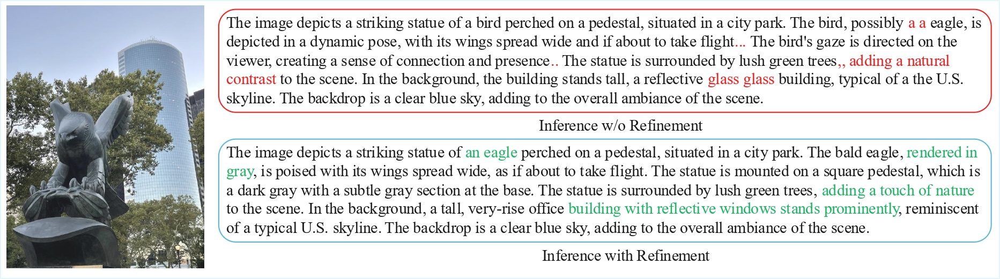

Discrete diffusion models have emerged as a promising direction for vision-language tasks, offering bidirectional context modeling and theoretical parallelization. However, their practical application is severely hindered by a train-inference discrepancy, which leads to catastrophic error cascades: initial token errors during parallel decoding pollute the generation context, triggering a chain reaction of compounding errors and leading to syntactic errors and semantic hallucinations. To address this fundamental challenge, we reframe the generation process from passive denoising to active refining. We introduce ReDiff, a refining-enhanced diffusion framework that teaches the model to identify and correct its own errors. Our approach features a two-stage training process: first, we instill a foundational revision capability by training the model to revise synthetic errors; second, we implement a novel online self-correction loop where the model is explicitly trained to revise its own flawed drafts by learning from an expert's corrections. This mistake-driven learning endows the model with the crucial ability to revisit and refine its already generated output, effectively breaking the error cascade. Extensive experiments demonstrate that ReDiff significantly improves the coherence and factual accuracy of generated content, enabling stable and efficient parallel generation far superior to traditional denoising methods.

💡 ReDiff

(a) Observations of existing vision-language diffusion models, especially in few-step generation scenarios, reveal two predominant error types: syntactic chaos (e.g., incoherence, repetition, grammatical errors) and semantic hallucinations (content that contradicts the visual input).
(b) In the foundational revision training stage, we instill a general corrective capability by training a base model (ReDiff-Base) to revise two types of synthetic errors that are intentionally injected into ground-truth captions.
(c) For the second stage, i.e., online self-correction learning, the model generates its own flawed "drafts". These drafts, containing the model's grammatical and hallucinatory errors, are then revised by an expert AI assistant. The resulting ``draft-refined pairs" provide strong supervision, teaching our final model (ReDiff) to identify and correct its own intrinsic mistakes, thus breaking the error cascade.
🖼️ Cases Comparison

inference speed: 4 tokens/step

inference speed: 8 tokens/step

inference speed: 2 tokens/step
Comparison of the parallel-generated captions from ReDiff and LLaDA-V.
When generating multiple tokens each step, the baseline's output suffers from token repetition, grammatical errors, and semantic hallucinations. This occurs because an initial chaos or hallucination can affect subsequent generation, leading to error cascades.
In contrast, our model's output is fluent, coherent, and factually grounded. Because ReDiff has the ability to revisit and refine its own outputs.
🔄 Refinement Process
Tokens can be iteratively revised—even those previously changed are updated again
(red border), while the final answer is marked with a
yellow dashed border, illustrating flexible step-by-step reasoning.
👁️🗨️ More Results

Comparison of inference with and without the refinement highlights that the refinement capability is critical for achieving high-quality outputs.
If ReDiff inferences without the refinement, errors tend to accumulate, such as repeated words or symbols and incoherent sentences, ultimately degrading the quality of the caption.

Beyond correcting the model's own errors during generation, ReDiff also demonstrates a powerful, generalizable ability to revise disturbing inputs. When we provide the model with an image and a user-provided caption containing either syntactic chaos or a factual hallucination, our model successfully corrects the initial erroneous text and proceeds to generate a coherent and accurate completion.
BibTeX
@article{wang2025fudokidiscreteflowbasedunified,
title={From Denoising to Refining: A Corrective Framework for Vision-Language Diffusion Model},
author={Yatai Ji and Teng Wang and Yuying Ge and Zhiheng Liu and Sidi Yang and Ying Shan and Ping Luo},
year={2025},
eprint={},
archivePrefix={arXiv},
primaryClass={cs.CV},
url={}
}